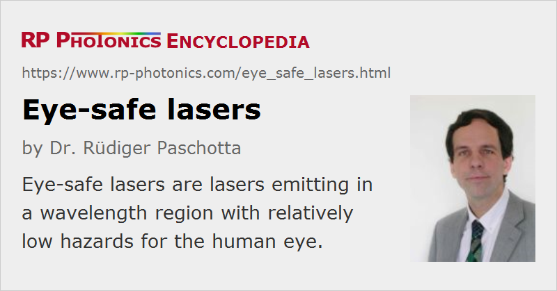

Eye-safe Lasers
Definition: lasers emitting in a wavelength region with relatively low hazards for the human eye
More general terms: lasers
German: augensichere Laser
How to cite the article; suggest additional literature
Author: Dr. Rüdiger Paschotta
Lasers with emission wavelengths longer than ≈ 1.4 μm are often called “eye-safe”, because light in that wavelength range is strongly absorbed in the eye's cornea and lens and therefore cannot reach the significantly more sensitive retina. This makes e.g. erbium lasers and erbium-doped fiber amplifiers used in 1.5-μm telecom systems or 2-μm thulium lasers far less dangerous than e.g. 1-μm lasers with similar output powers. Another class of eye-safe laser sources are optical parametric oscillators.
On the other hand, the absorption length of the cornea reaches very small values (well below 0.1 mm) at longer wavelengths, particularly around 3 μm and around 10 μm (near the wavelength of CO2 lasers). This means that optical pulses at such wavelengths are absorbed in a very thin layer, so that the cornea can easily be damaged. Therefore, lasers emitting around 3 μm or 10 μm are less eye-safe than e.g. lasers emitting around 1.5 μm, even though they are “retina-safe”. While the outer surface of the cornea (the epithelium) can at least heal within a couple of days after damage, this is not the case for the inner part (the endothelium). Also, corneal injuries can be very painful.
Obviously, the quality “eye-safe” depends not only on the emission wavelength, but also on the power level and the optical intensity which can reach the eye. With sufficient power, such as is reached with a fiber amplifier or with a Q-switched laser, the eye can still be damaged. However, it can already be very helpful if at least weak parasitic reflections of some main beam are not dangerous for the eyes.
Note that the laser power alone (or the intensity at the laser output) is not sufficient to assess the possible intensity in the eye; that also depends on other factors such as the beam divergence and beam quality. Therefore, one cannot simply state a power or intensity limit for eye safety at a given wavelength.
Applications of Eye-Safe Lasers
Eye-safe lasers are particularly important in application cases where light needs to be transmitted over substantial distances in open air. Examples are laser rangefinders and free-space optical communications.
Suppliers
The RP Photonics Buyer's Guide contains 23 suppliers for eye-safe lasers. Among them:
Questions and Comments from Users
Here you can submit questions and comments. As far as they get accepted by the author, they will appear above this paragraph together with the author’s answer. The author will decide on acceptance based on certain criteria. Essentially, the issue must be of sufficiently broad interest.
Please do not enter personal data here; we would otherwise delete it soon. (See also our privacy declaration.) If you wish to receive personal feedback or consultancy from the author, please contact him e.g. via e-mail.
By submitting the information, you give your consent to the potential publication of your inputs on our website according to our rules. (If you later retract your consent, we will delete those inputs.) As your inputs are first reviewed by the author, they may be published with some delay.
See also: laser safety, laser rangefinders, free-space optical communications
and other articles in the category lasers
|  |
If you like this page, please share the link with your friends and colleagues, e.g. via social media:
These sharing buttons are implemented in a privacy-friendly way!